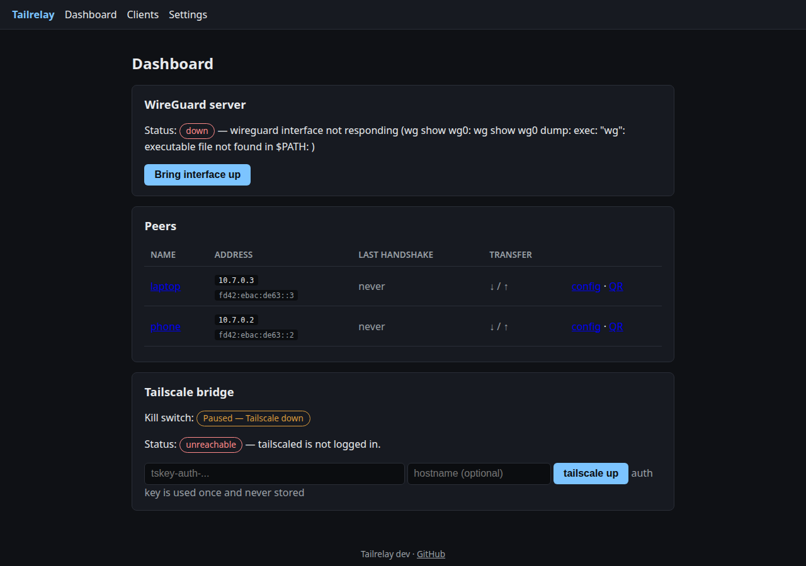
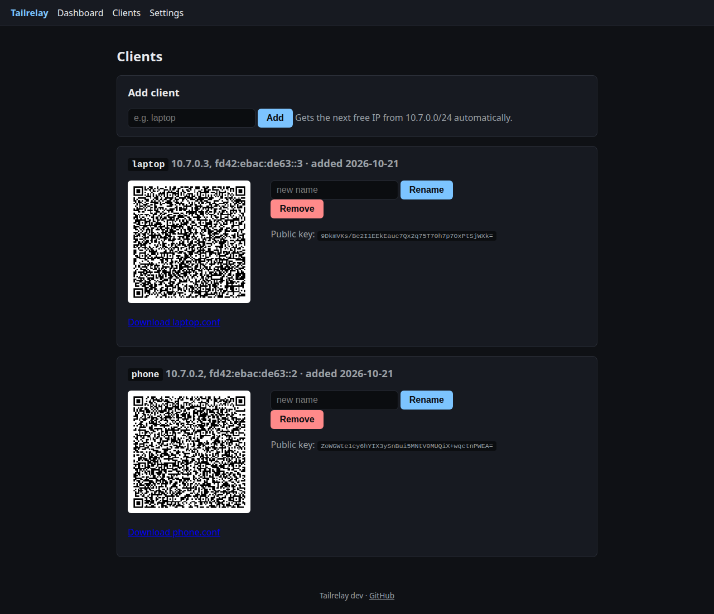
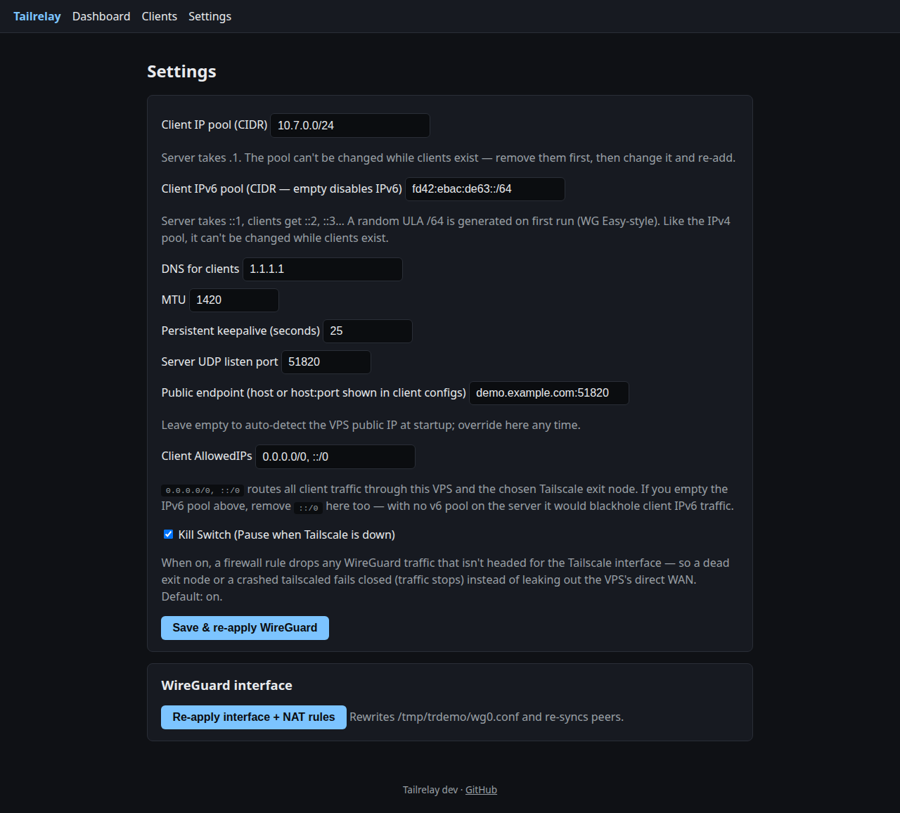

Tailrelay
An extremely lightweight WireGuard server for your VPS, bridged into your Tailscale tailnet — managed from a tiny web UI. WireGuard-only devices ride your tailnet, including its exit nodes.
What it does
WireGuard server, managed
Generates server keys and configs, enrolls clients with one click, auto-assigns IPs from your pool, and serves per-client.conf downloads plus QR codes.Tailscale bridge
Bridges the WireGuard network into your tailnet. Pick a Tailscale exit node and every WireGuard client relays through it — no Tailscale client needed on the device.Kill switch
Optional fail-closed DROP: iftailscaled dies on the VPS, client traffic is dropped — never leaked via the VPS's real IP. Toggleable, on by default, with live status.Dual-stack IPv6
WG Easy-style: a random ULA/64 is generated on first run, clients get ::2, ::3…, alongside their IPv4 addresses.Sane access model
Binds to your Tailscale IP by default — your tailnet is the login. Optionally bind anywhere with password + TLS.Never auto-reroutes
A dead exit node fails closed (traffic stops, location never silently changes). Recovery is always your explicit choice.The web UI

Dashboard — WireGuard peers with live handshake stats, kill-switch state ("Paused — Tailscale down" here, because this demo has no tailnet), and the Tailscale bridge panel.

Clients — one-click enrollment, QR codes for mobile apps, .conf downloads, rename and instant revocation.

Settings — IP pools (v4 + v6), DNS/MTU/keepalive, advertised routes, exit-node selection, kill-switch toggle, bind address and TLS.
Run it
docker run -d --name tailrelay --network host --cap-add NET_ADMIN \
-v /var/run/tailscale/tailscaled.sock:/var/run/tailscale/tailscaled.sock \
-v tailrelay-state:/var/lib/tailrelay \
ghcr.io/tamtunnel/tailrelay:latestOr grab the static binary from GitHub and run it with systemd — tailscaled must already be installed and logged in. Full docs in the README.